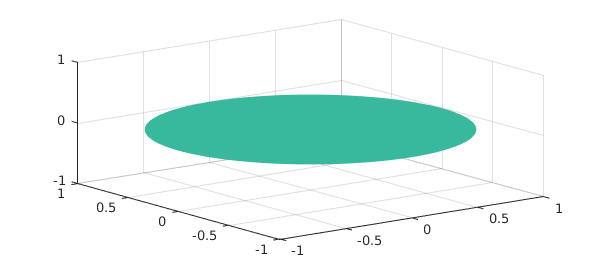

In this example we illustrate Gauss's theorem, Green's identities, and Stokes' theorem in Chebfun3.
1. Gauss's theorem
Gauss's theorem, also known as the divergence theorem, asserts that the integral of the sources of a vector field in a domain $K$ is equal to the flux of the vector field through the boundary: $$ \int_K \mbox{div}(\vec{v}) \, dV = \int_{\partial K} \vec{v} \cdot \vec{dS}. $$ Here $\vec{dS}$ is the vectorial surface element given by $\vec{dS} = \vec{n} dS$, where $\vec{n}$ is the outward normal vector to the surface $\partial K$ and $dS$ is the surface element.
Let us consider a simple 3D vector field $\vec{v}$ on the cube $K = [-1, 1]^3$:
cheb.xyz; v1 = x.^2-y; v2 = y.^2; v3 = z; v = [ v1 ; v2 ; v3 ];
Here we have built $\vec{v}$ by stacking three Chebfun3 objects one over another, beginning with the command cheb.xyz to generate chebfun3 objects x, y, and z corresponding to the functions $x$, $y$, and $z$. Alternatively we could pass three function handles directly to the Chebfun3v constructor; see the example for Stokes' Theorem below.
The left-hand side of the identity of Gauss's theorem, the integral of the divergence, can be computed in Chebfun3 like this, nicely matching the exact value 8:
format long I1 = sum3(div(v))
I1 = 7.999999999999998
For the right-hand side we need the flux integral over the boundary of the cube, which consists of six surfaces. The outward normal vectors on the sides ${ \pm 1 } \times [-1, 1]^2$ are $\pm [1; 0; 0]$. Thus we have to integrate $\vec{v}(\pm 1, y, z) \cdot [\pm 1; 0; 0] = \pm v_1(\pm 1, y, z)$ over these sides of the cube. The restrictions $v_1(\pm 1,:,:)$ are represented as chebfun2 objects. Treating the other two pairs of sides similarly, we compute a result again with excellent accuracy:
I2 = sum2(v1(1,:,:)) - sum2(v1(-1,:,:)) + ...
sum2(v2(:,1,:)) - sum2(v2(:,-1,:)) + ...
sum2(v3(:,:,1)) - sum2(v3(:,:,-1))
I2 =
8
2. Green's identities
The first Green identity is an analogue of integration by parts in higher dimensions: $$ \int_K ( f \Delta g + \nabla f \cdot \nabla g ) \, dV = \int_{\partial K} f \nabla g \cdot \vec{dS}. $$ This is a corollary of the Gauss's theorem (set $\vec{v} = f \nabla g$). The second Green identity is $$ \int_K (f \Delta g - (\Delta f) g ) \, dV = \int_{\partial K} ( f \nabla g - g \nabla f ) \cdot \vec{dS}. $$ In both formulas $f$ and $g$ are scalar functions on $K$. To illustrate both formulas in Chebfun3, let us consider the functions
f = 1 + x.*exp(y+z); g = x.^2 + y.^2 + z.^2; isosurface(g,1.3,'r'), axis equal, grid on
The Laplacian and gradient of $f$ can be computed with lap(f) and grad(f). We evaluate the two sides of the first Green identity in the same way as for the Gauss's theorem above. The exact value $48$ is matched closely by the integral over the cube,
I3 = sum3(f .* lap(g) + dot(grad(f), grad(g)))
I3 = 48.000000000000114
The flux integral also agrees:
v = f * grad(g);
v1 = v(1); v2 = v(2); v3 = v(3);
I4 = sum2(v1(1,:,:)) - sum2(v1(-1,:,:)) + ...
sum2(v2(:,1,:)) - sum2(v2(:,-1,:)) + ...
sum2(v3(:,:,1)) - sum2(v3(:,:,-1))
I4 = 47.999999999999993
For the second Green formula the exact value of the integrals is again $48$. We compute
I5 = sum3(f .* lap(g) - lap(f) .* g)
I5 = 47.999999999999773
and
v = f * grad(g) - g * grad(f);
v1 = v(1); v2 = v(2); v3 = v(3);
I6 = sum2(v1(1,:,:)) - sum2(v1(-1,:,:)) + ...
sum2(v2(:,1,:)) - sum2(v2(:,-1,:)) + ...
sum2(v3(:,:,1)) - sum2(v3(:,:,-1))
I6 = 47.999999999999886
3. Stokes' Theorem
Stokes' Theorem in its classical formulation takes the form $$ \int_S \mbox{curl}(\vec{v}) \cdot \vec{dS} = \int_{\partial S} \vec{v} \cdot \vec{ds}. $$ Here, the vectorial line element $\vec{ds}$ is $\vec{ds} = \vec{t} ds$, where $\vec{t}$ is the tangential vector and $ds$ is the scalar line element. As an easy example we consider the surface given by the unit disk in the $x$ - $y$ plane, which can be parametrised by
S = chebfun2v(@(rho,phi) rho.*cos(phi), @(rho,phi) rho.*sin(phi), ...
@(rho,phi) 0, [0, 1, 0, 2*pi]);
surf(S)

We consider again the vector field $\vec{v}$ from the beginning, which we now construct by passing three function handles to the Chebfun3v constructor:
v = chebfun3v(@(x,y,z) x.^2 - y, @(x,y,z) y.^2, @(x,y,z) z); quiver3(v)
The curl of $\vec{v}$ is computed by
curlv = curl(v); quiver3(curlv)
Note how the curl of $\vec{v}$ points up, just through the surface we are considering. The flux integral then is
I7 = integral2(curlv, S)
I7 = 3.141592653589792
The exact value is $\pi$,
pi
ans = 3.141592653589793
To compute the line integral over the boundary of the surface, we first parametrize the circle by
gamma = chebfun(@(t) [cos(t), sin(t), 0*t], [0, 2*pi]);
Then the line integral is
I8 = integral(v, gamma)
I8 = 3.141592653589793